File: 000060.gt.txt (if the image is defective, simply delete all Arabic text and the line will be excluded)
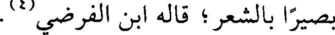
بصيرا بالشعر ؛ قاله ابن الفرضي (4) .
File: 000061.gt.txt (if the image is defective, simply delete all Arabic text and the line will be excluded)
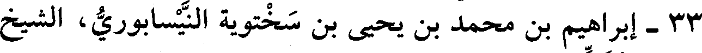
33 - إبراهيم بن محمد بن يحيى بن سختويه النيسابوري، الشيخ
File: 000062.gt.txt (if the image is defective, simply delete all Arabic text and the line will be excluded)
أبو إسحاق المزكي.
File: 000063.gt.txt (if the image is defective, simply delete all Arabic text and the line will be excluded)
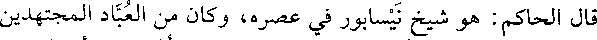
قال الحاكم: هو شيخ نيسابور في عصره، وكان من العباد المجتهدين
File: 000064.gt.txt (if the image is defective, simply delete all Arabic text and the line will be excluded)
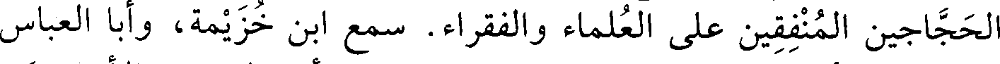
الحجاجين المنفقين على العلماء والفقراء. سمع ابن خزيمة، وأبا العباس
File: 000065.gt.txt (if the image is defective, simply delete all Arabic text and the line will be excluded)
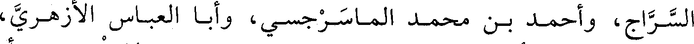
السراج، وأحمد بن محمد الماسرجسي، وأبا العباس الأزهري،
File: 000066.gt.txt (if the image is defective, simply delete all Arabic text and the line will be excluded)
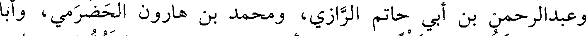
وعبدالرحمن بن أبي حاتم الرازي، ومحمد بن هارون الحضرمي، وأبا
File: 000067.gt.txt (if the image is defective, simply delete all Arabic text and the line will be excluded)
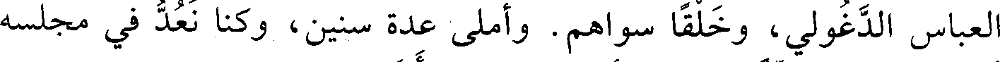
العباس الدغولي، وخلقا سواهم. وأملى عدة سنين، وكنا نعد في مجلسه
File: 000068.gt.txt (if the image is defective, simply delete all Arabic text and the line will be excluded)
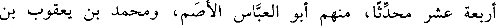
أربعة عشر محدثا، منهم أبو العباس الأصم، ومحمد بن يعقوب بن
File: 000069.gt.txt (if the image is defective, simply delete all Arabic text and the line will be excluded)
الأخرم.
File: 000070.gt.txt (if the image is defective, simply delete all Arabic text and the line will be excluded)
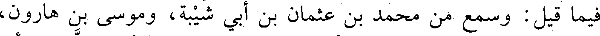
فيما قيل : وسمع من محمد بن عثمان بن أبي شيبة، وموسى بن هارون،
File: 000071.gt.txt (if the image is defective, simply delete all Arabic text and the line will be excluded)
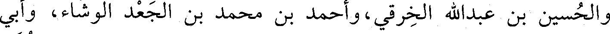
والحسين بن عبدالله الخرقي، وأحمد بن محمد بن الجعد الوشاء، وأبي
File: 000072.gt.txt (if the image is defective, simply delete all Arabic text and the line will be excluded)
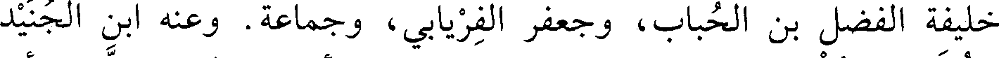
خليفة الفضل بن الحباب، وجعفر الفريابي، وجماعة. وعنه ابن الجنيد
File: 000073.gt.txt (if the image is defective, simply delete all Arabic text and the line will be excluded)
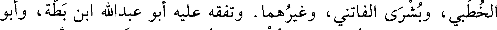
الخطبي، وبشرى الفاتني، وغيرهما. وتفقه عليه أبو عبدالله ابن بطة، وأبو
File: 000074.gt.txt (if the image is defective, simply delete all Arabic text and the line will be excluded)
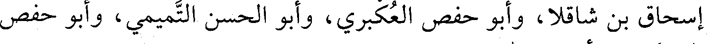
إسحاق بن شاقلا، وأبو حفص العكبري، وأبو الحسن التميمي، وأبو حفص
File: 000075.gt.txt (if the image is defective, simply delete all Arabic text and the line will be excluded)
البرمكي، وأبو عبدالله بن حامد.
File: 000076.gt.txt (if the image is defective, simply delete all Arabic text and the line will be excluded)
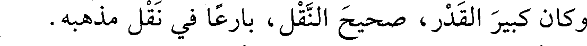
وكان كبير القدر، صحيح النقل، بارعا في نقل مذهبه.
File: 000077.gt.txt (if the image is defective, simply delete all Arabic text and the line will be excluded)
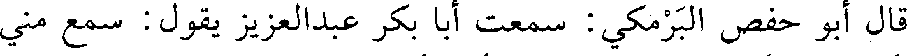
قال أبو حفص البرمكي: سمعت أبا بكر عبدالعزيز يقول: سمع مني
File: 000078.gt.txt (if the image is defective, simply delete all Arabic text and the line will be excluded)
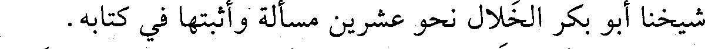
شيخنا أبو بكر الخلال نحو عشرين مسألة وأثبتها في كتابه.
File: 000079.gt.txt (if the image is defective, simply delete all Arabic text and the line will be excluded)
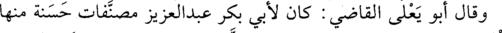
وقال أبو يعلى القاضي : كان لأبي بكر عبدالعزيز مصنفات حسنة منها
File: 000080.gt.txt (if the image is defective, simply delete all Arabic text and the line will be excluded)
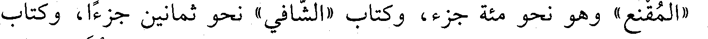
«المقنع» وهو نحو مئة جزء، وكتاب «الشافي» نحو ثمانين جزءا، وكتاب
File: 000081.gt.txt (if the image is defective, simply delete all Arabic text and the line will be excluded)
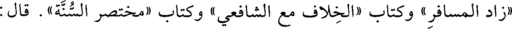
«زاد المسافر» وكتاب «الخلاف مع الشافعي» وكتاب «مختصر السنة». قال :
File: 000082.gt.txt (if the image is defective, simply delete all Arabic text and the line will be excluded)
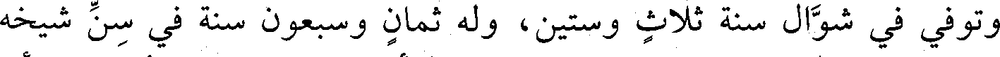
وتوفي في شوال سنة ثلاث وستين، وله ثمان وسبعون سنة في سن شيخه
File: 000083.gt.txt (if the image is defective, simply delete all Arabic text and the line will be excluded)
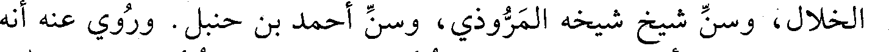
الخلال، وسن شيخ شيخه المروذي، وسن أحمد بن حنبل. وروي عنه أنه
File: 000084.gt.txt (if the image is defective, simply delete all Arabic text and the line will be excluded)
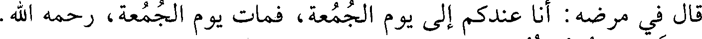
قال في مرضه : أنا عندكم إلى يوم الجمعة، فمات يوم الجمعة، رحمه الله.
File: 000085.gt.txt (if the image is defective, simply delete all Arabic text and the line will be excluded)
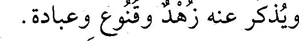
ويذكر عنه زهد وقنوع وعبادة.
File: 000086.gt.txt (if the image is defective, simply delete all Arabic text and the line will be excluded)
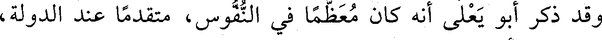
وقد ذكر أبو يعلى أنه كان معظما في النفوس، متقدما عند الدولة،
File: 000087.gt.txt (if the image is defective, simply delete all Arabic text and the line will be excluded)
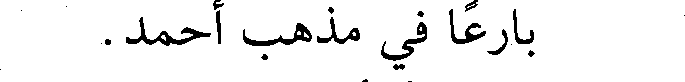
بارعا في مذهب أحمد.
File: 000088.gt.txt (if the image is defective, simply delete all Arabic text and the line will be excluded)
أنبأنا المؤمل ابن البالسي، قال: أخبرنا أبو اليمن الكندي، قال :
File: 000089.gt.txt (if the image is defective, simply delete all Arabic text and the line will be excluded)
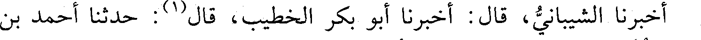
أخبرنا الشيباني، قال : أخبرنا أبو بكر الخطيب، قال(1) : حدثنا أحمد بن
To Save: `Ctrl+s`, make sure to choose `Webpage, complete`!